Slides da palestra: Captação de Recursos Federais via Transferegov.br para o Terceiro Setor
Slides disponíveis só para acompanhar a apresentação. O texto de cada slide está em "Texto do slide", logo abaixo da imagem. Use os botões ou as setas do teclado para avançar e voltar.
-
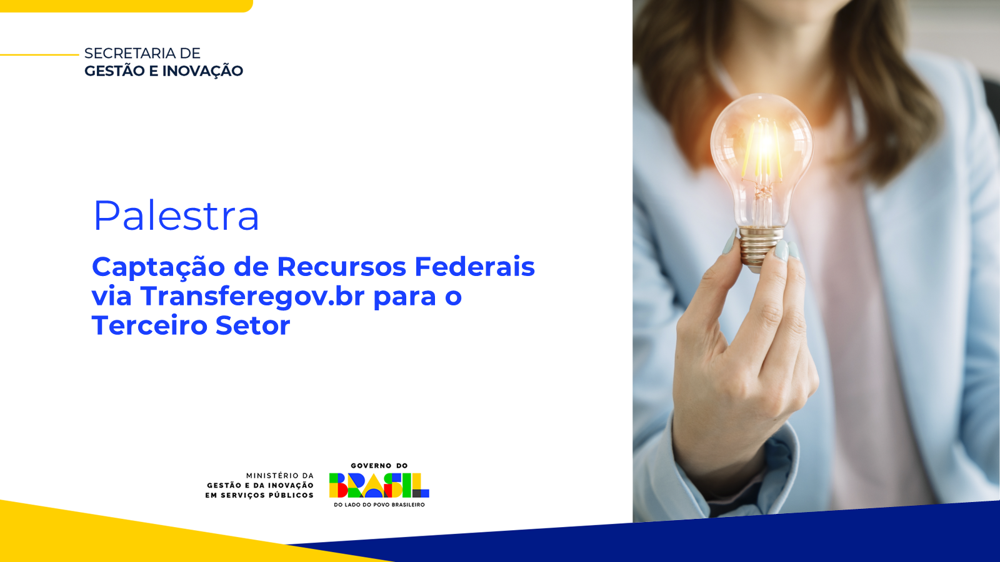
Slide 1 de 18 Texto do slide 1
Palestra
Captação de Recursos Federais via Transferegov.br para o Terceiro Setor
-
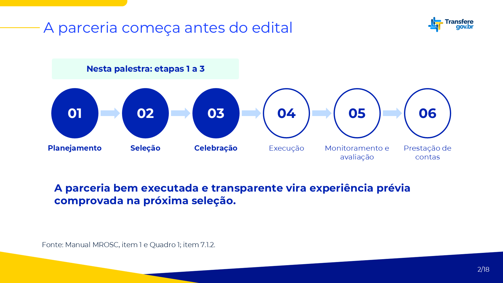
Slide 2 de 18 Texto do slide 2
A parceria começa antes do edital
Fonte: Manual MROSC, item 1 e Quadro 1; item 7.1.2.
01
Planejamento
02
Seleção
03
Celebração
04
Execução
05
Monitoramento e avaliação
06
Prestação de contas
Nesta palestra: etapas 1 a 3
A parceria bem executada e transparente vira experiência prévia comprovada na próxima seleção.
-
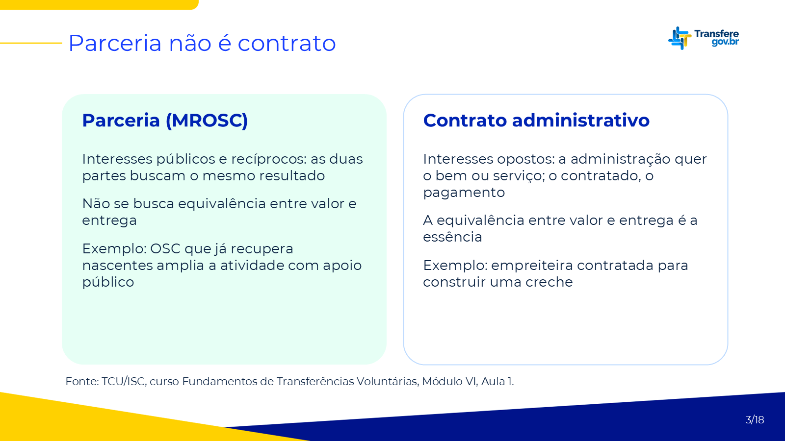
Slide 3 de 18 Texto do slide 3
Parceria não é contrato
Fonte: TCU/ISC, curso Fundamentos de Transferências Voluntárias, Módulo VI, Aula 1.
Parceria (MROSC)
Interesses públicos e recíprocos: as duas partes buscam o mesmo resultado
Não se busca equivalência entre valor e entrega
Exemplo: OSC que já recupera nascentes amplia a atividade com apoio públicoContrato administrativo
Interesses opostos: a administração quer o bem ou serviço; o contratado, o pagamento
A equivalência entre valor e entrega é a essência
Exemplo: empreiteira contratada para construir uma creche -
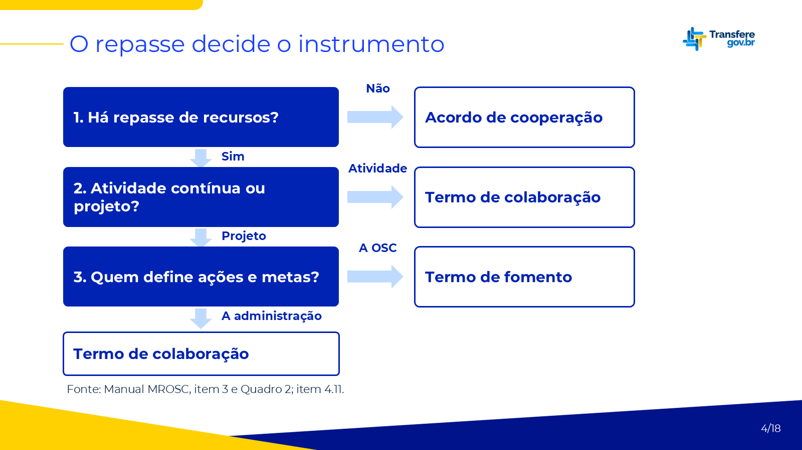
Slide 4 de 18 Texto do slide 4
O repasse decide o instrumento
Fonte: Manual MROSC, item 3 e Quadro 2; item 4.11.
1. Há repasse de recursos?
Não
Acordo de cooperação
Sim
2. Atividade contínua ou projeto?
Atividade
Termo de colaboração
Projeto
3. Quem define ações e metas?
A OSC
Termo de fomento
A administração
Termo de colaboração
-
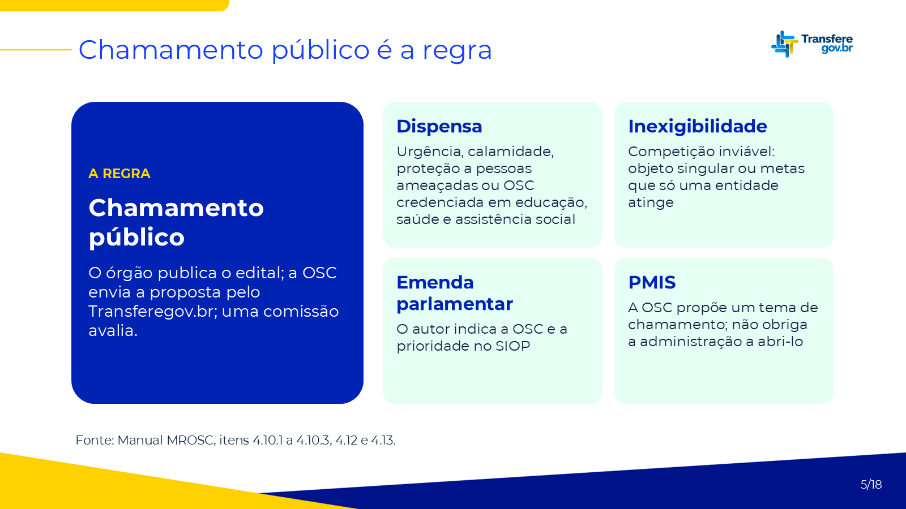
Slide 5 de 18 Texto do slide 5
Chamamento público é a regra
Fonte: Manual MROSC, itens 4.10.1 a 4.10.3, 4.12 e 4.13.
A REGRA
Chamamento público
O órgão publica o edital; a OSC envia a proposta pelo Transferegov.br; uma comissão avalia.Dispensa
Urgência, calamidade, proteção a pessoas ameaçadas ou OSC credenciada em educação, saúde e assistência socialInexigibilidade
Competição inviável: objeto singular ou metas que só uma entidade atingeEmenda parlamentar
O autor indica a OSC e a prioridade no SIOPPMIS
A OSC propõe um tema de chamamento; não obriga a administração a abri-lo -
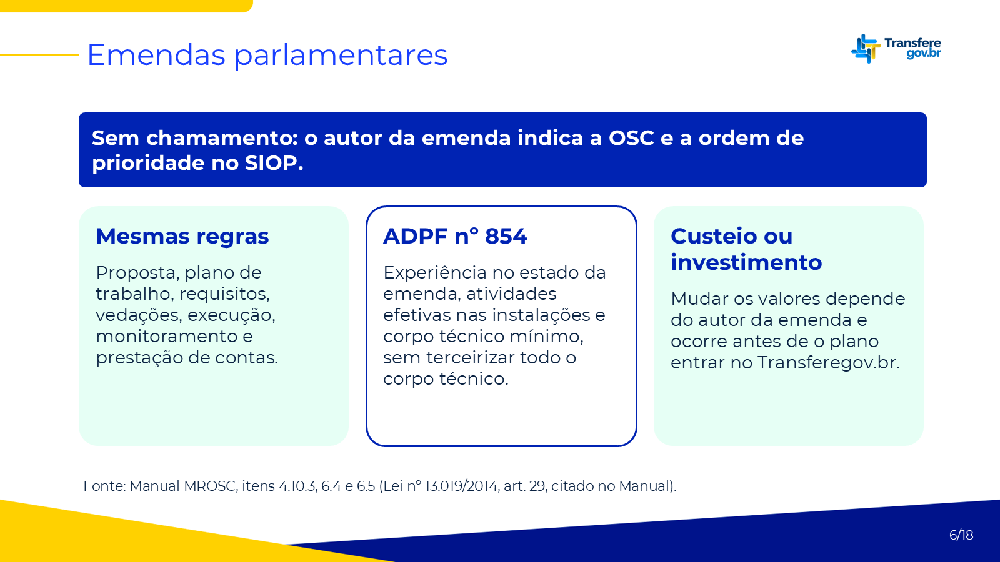
Slide 6 de 18 Texto do slide 6
Emendas parlamentares
Fonte: Manual MROSC, itens 4.10.3, 6.4 e 6.5 (Lei nº 13.019/2014, art. 29, citado no Manual).
Sem chamamento: o autor da emenda indica a OSC e a ordem de prioridade no SIOP.
Mesmas regras
Proposta, plano de trabalho, requisitos, vedações, execução, monitoramento e prestação de contas.ADPF nº 854
Experiência no estado da emenda, atividades efetivas nas instalações e corpo técnico mínimo, sem terceirizar todo o corpo técnico.Custeio ou investimento
Mudar os valores depende do autor da emenda e ocorre antes de o plano entrar no Transferegov.br. -
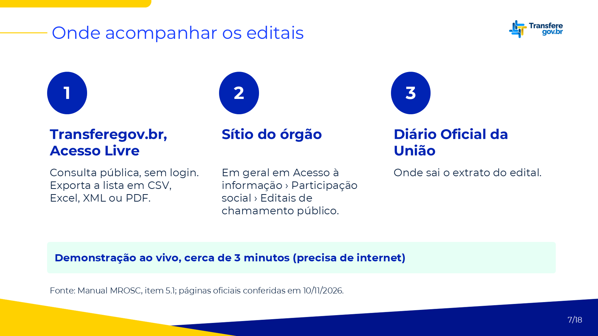
Slide 7 de 18 Texto do slide 7
Onde acompanhar os editais
Fonte: Manual MROSC, item 5.1; páginas oficiais conferidas em 10/11/2026.
1
Transferegov.br, Acesso Livre
Consulta pública, sem login. Exporta a lista em CSV, Excel, XML ou PDF.
2
Sítio do órgão
Em geral em Acesso à informação › Participação social › Editais de chamamento público.
3
Diário Oficial da União
Onde sai o extrato do edital.
Demonstração ao vivo, cerca de 3 minutos (precisa de internet)
-
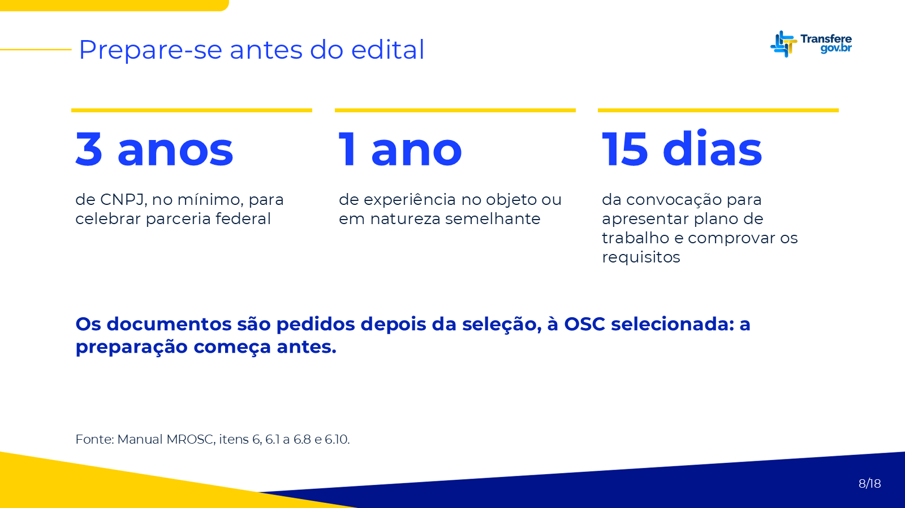
Slide 8 de 18 Texto do slide 8
Prepare-se antes do edital
Fonte: Manual MROSC, itens 6, 6.1 a 6.8 e 6.10.
3 anos
de CNPJ, no mínimo, para celebrar parceria federal
1 ano
de experiência no objeto ou em natureza semelhante
15 dias
da convocação para apresentar plano de trabalho e comprovar os requisitos
Os documentos são pedidos depois da seleção, à OSC selecionada: a preparação começa antes.
-
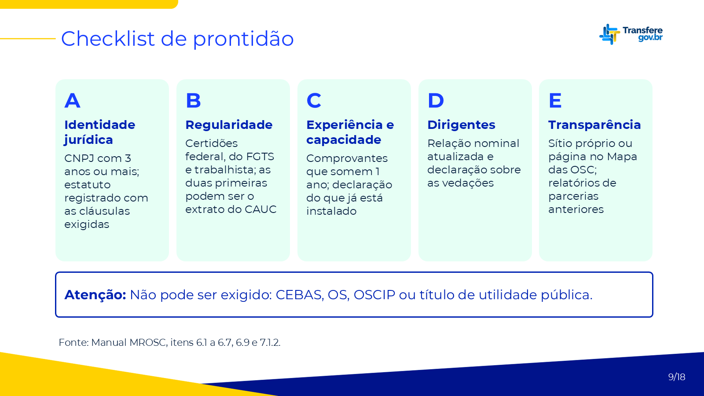
Slide 9 de 18 Texto do slide 9
Checklist de prontidão
Fonte: Manual MROSC, itens 6.1 a 6.7, 6.9 e 7.1.2.
A
Identidade jurídica
CNPJ com 3 anos ou mais; estatuto registrado com as cláusulas exigidasB
Regularidade
Certidões federal, do FGTS e trabalhista; as duas primeiras podem ser o extrato do CAUCC
Experiência e capacidade
Comprovantes que somem 1 ano; declaração do que já está instaladoD
Dirigentes
Relação nominal atualizada e declaração sobre as vedaçõesE
Transparência
Sítio próprio ou página no Mapa das OSC; relatórios de parcerias anterioresAtenção: Não pode ser exigido: CEBAS, OS, OSCIP ou título de utilidade pública.
-
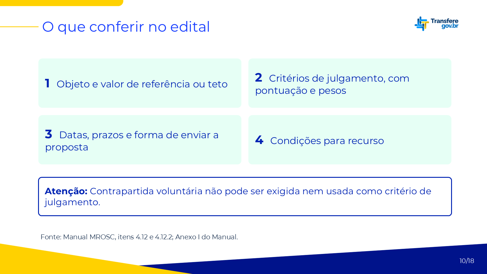
Slide 10 de 18 Texto do slide 10
O que conferir no edital
Fonte: Manual MROSC, itens 4.12 e 4.12.2; Anexo I do Manual.
1 Objeto e valor de referência ou teto
2 Critérios de julgamento, com pontuação e pesos
3 Datas, prazos e forma de enviar a proposta
4 Condições para recurso
Atenção: Contrapartida voluntária não pode ser exigida nem usada como critério de julgamento.
-
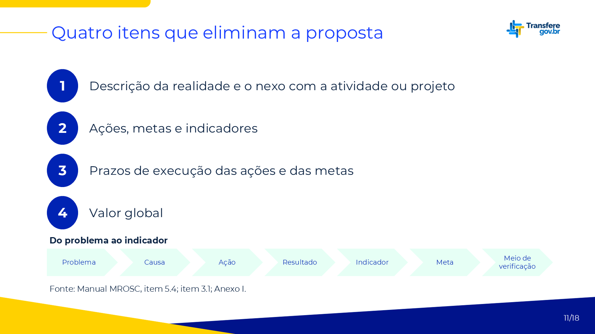
Slide 11 de 18 Texto do slide 11
Quatro itens que eliminam a proposta
Fonte: Manual MROSC, item 5.4; item 3.1; Anexo I.
1
Descrição da realidade e o nexo com a atividade ou projeto
2
Ações, metas e indicadores
3
Prazos de execução das ações e das metas
4
Valor global
Do problema ao indicador
Problema
Causa
Ação
Resultado
Indicador
Meta
Meio de verificação
-
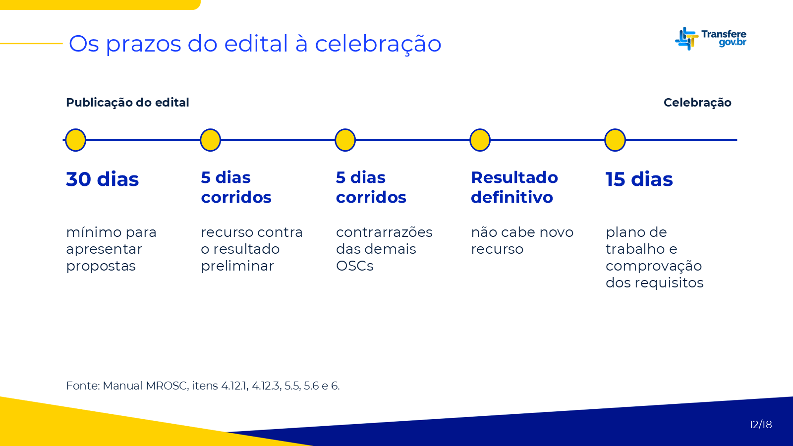
Slide 12 de 18 Texto do slide 12
Os prazos do edital à celebração
Fonte: Manual MROSC, itens 4.12.1, 4.12.3, 5.5, 5.6 e 6.
30 dias
mínimo para apresentar propostas
5 dias corridos
recurso contra o resultado preliminar
5 dias corridos
contrarrazões das demais OSCs
Resultado definitivo
não cabe novo recurso
15 dias
plano de trabalho e comprovação dos requisitos
Publicação do edital
Celebração
-
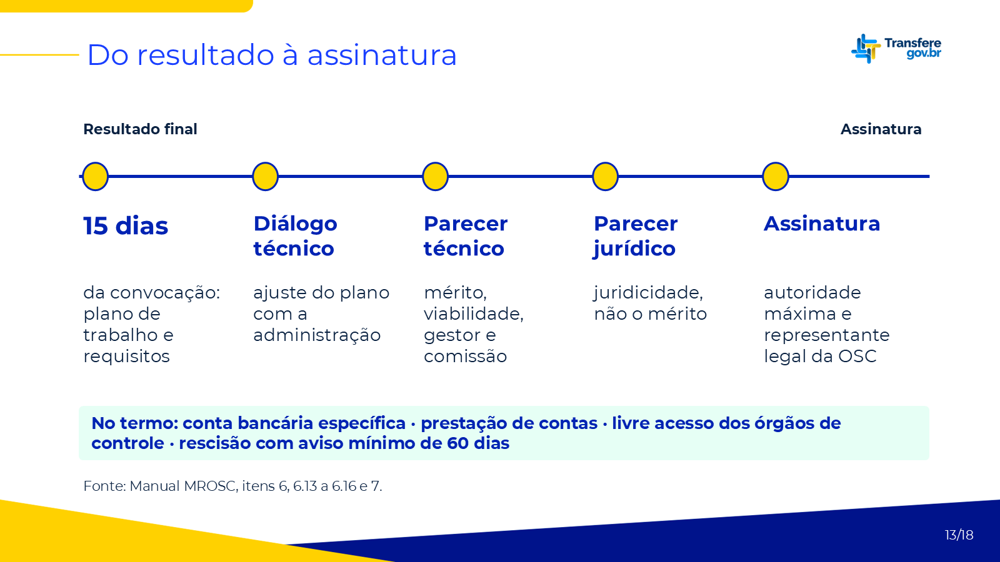
Slide 13 de 18 Texto do slide 13
Do resultado à assinatura
Fonte: Manual MROSC, itens 6, 6.13 a 6.16 e 7.
15 dias
da convocação: plano de trabalho e requisitos
Diálogo técnico
ajuste do plano com a administração
Parecer técnico
mérito, viabilidade, gestor e comissão
Parecer jurídico
juridicidade, não o mérito
Assinatura
autoridade máxima e representante legal da OSC
Resultado final
Assinatura
No termo: conta bancária específica · prestação de contas · livre acesso dos órgãos de controle · rescisão com aviso mínimo de 60 dias
-
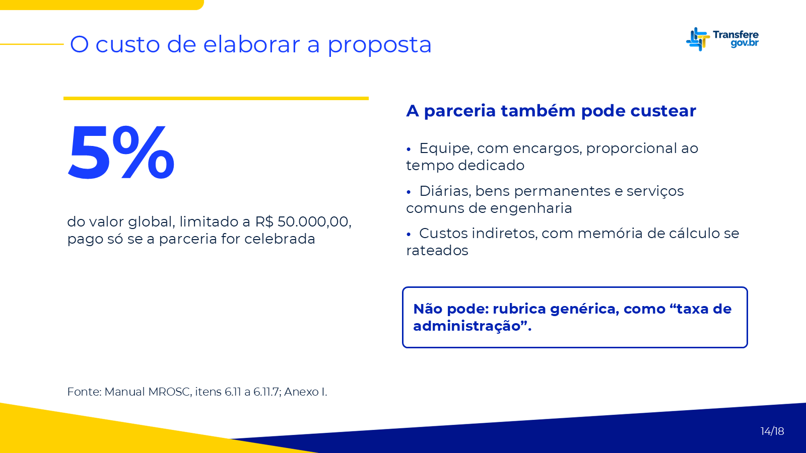
Slide 14 de 18 Texto do slide 14
O custo de elaborar a proposta
Fonte: Manual MROSC, itens 6.11 a 6.11.7; Anexo I.
5%
do valor global, limitado a R$ 50.000,00, pago só se a parceria for celebrada
A parceria também pode custear
• Equipe, com encargos, proporcional ao tempo dedicado
• Diárias, bens permanentes e serviços comuns de engenharia
• Custos indiretos, com memória de cálculo se rateadosNão pode: rubrica genérica, como “taxa de administração”.
-
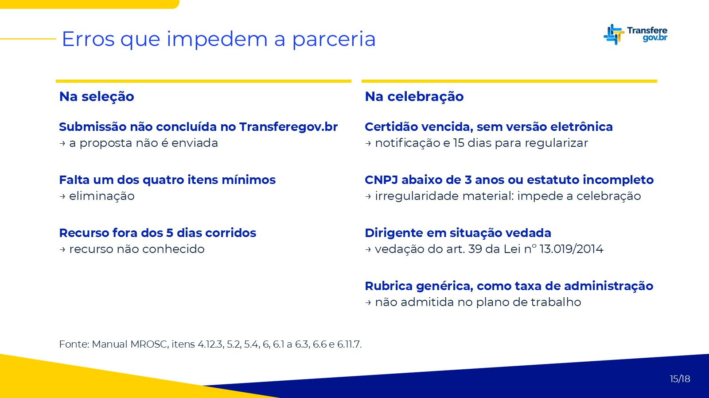
Slide 15 de 18 Texto do slide 15
Erros que impedem a parceria
Fonte: Manual MROSC, itens 4.12.3, 5.2, 5.4, 6, 6.1 a 6.3, 6.6 e 6.11.7.
Na seleção
Submissão não concluída no Transferegov.br
→ a proposta não é enviadaFalta um dos quatro itens mínimos
→ eliminaçãoRecurso fora dos 5 dias corridos
→ recurso não conhecidoNa celebração
Certidão vencida, sem versão eletrônica
→ notificação e 15 dias para regularizarCNPJ abaixo de 3 anos ou estatuto incompleto
→ irregularidade material: impede a celebraçãoDirigente em situação vedada
→ vedação do art. 39 da Lei nº 13.019/2014Rubrica genérica, como taxa de administração
→ não admitida no plano de trabalho -
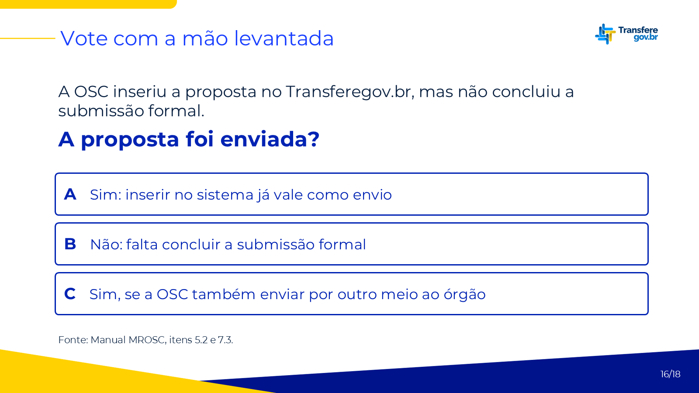
Slide 16 de 18 Texto do slide 16
Vote com a mão levantada
Fonte: Manual MROSC, itens 5.2 e 7.3.
A OSC inseriu a proposta no Transferegov.br, mas não concluiu a submissão formal.
A proposta foi enviada?
A Sim: inserir no sistema já vale como envio
B Não: falta concluir a submissão formal
C Sim, se a OSC também enviar por outro meio ao órgão
-
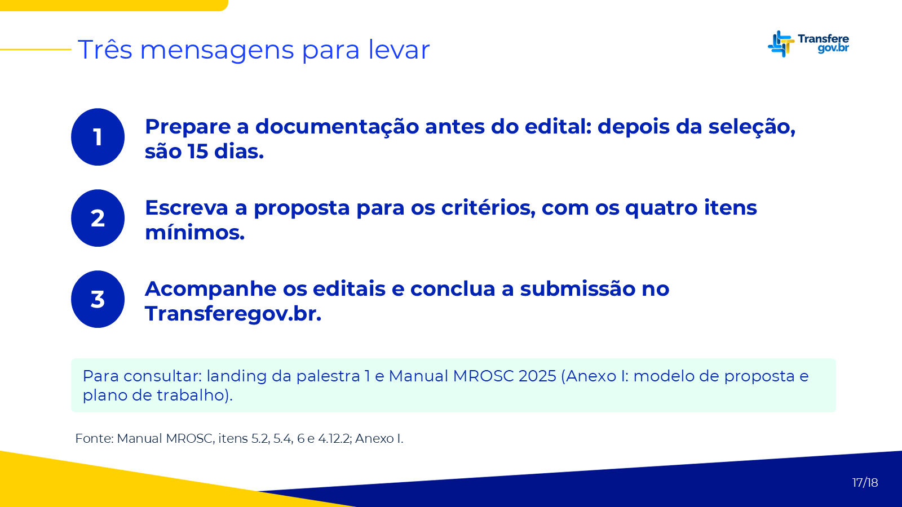
Slide 17 de 18 Texto do slide 17
Três mensagens para levar
Fonte: Manual MROSC, itens 5.2, 5.4, 6 e 4.12.2; Anexo I.
1
Prepare a documentação antes do edital: depois da seleção, são 15 dias.
2
Escreva a proposta para os critérios, com os quatro itens mínimos.
3
Acompanhe os editais e conclua a submissão no Transferegov.br.
Para consultar: landing da palestra 1 e Manual MROSC 2025 (Anexo I: modelo de proposta e plano de trabalho).
-
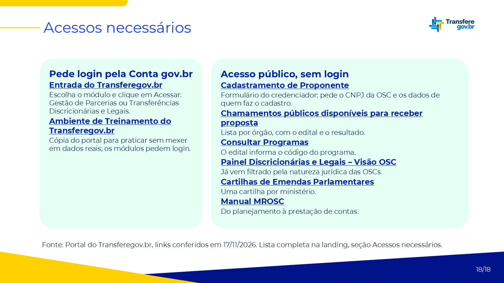
Slide 18 de 18 Texto e links do slide 18
Acessos necessários
Fonte: Portal do Transferegov.br, links conferidos em 17/11/2026. Lista completa na landing, seção Acessos necessários.
Pede login pela Conta gov.br
Entrada do Transferegov.br (abre em nova aba)
Escolha o módulo e clique em Acessar: Gestão de Parcerias ou Transferências Discricionárias e Legais.
Ambiente de Treinamento do Transferegov.br (abre em nova aba)
Cópia do portal para praticar sem mexer em dados reais; os módulos pedem login.Acesso público, sem login
Cadastramento de Proponente (abre em nova aba)
Formulário do credenciador: pede o CNPJ da OSC e os dados de quem faz o cadastro.
Chamamentos públicos disponíveis para receber proposta (abre em nova aba)
Lista por órgão, com o edital e o resultado.
Consultar Programas (abre em nova aba)
O edital informa o código do programa.
Painel Discricionárias e Legais – Visão OSC (abre em nova aba)
Já vem filtrado pela natureza jurídica das OSCs.
Cartilhas de Emendas Parlamentares (abre em nova aba)
Uma cartilha por ministério.
Manual MROSC (abre em nova aba)
Do planejamento à prestação de contas.